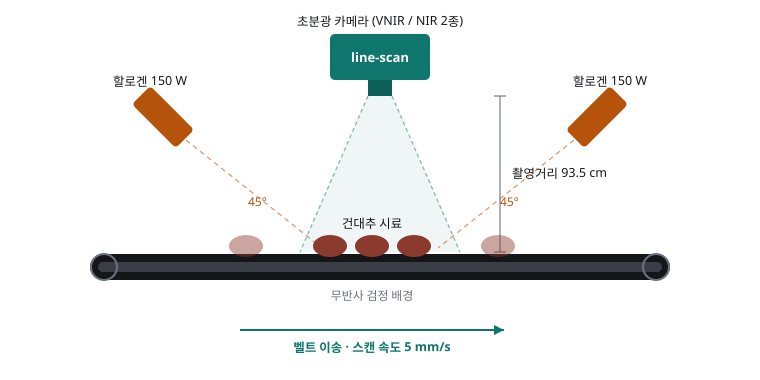
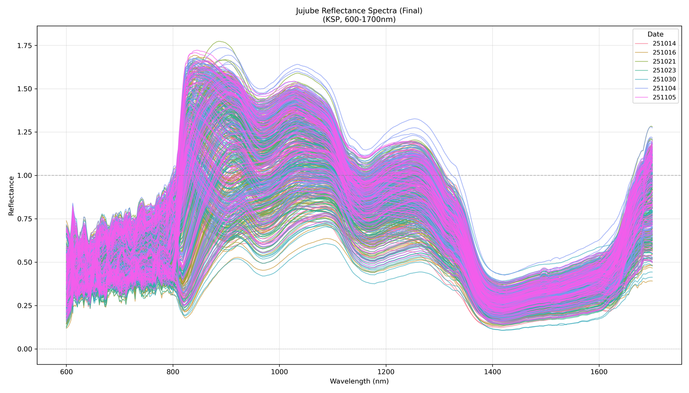
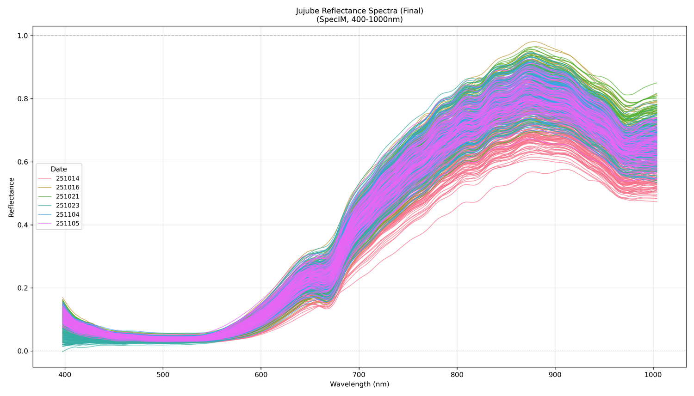
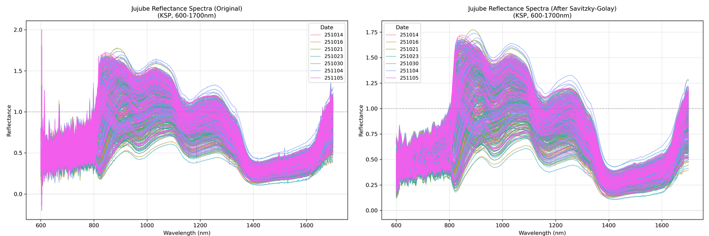
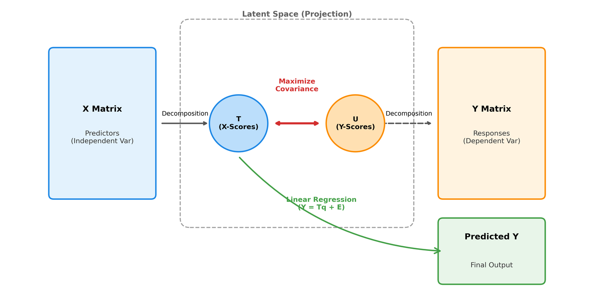
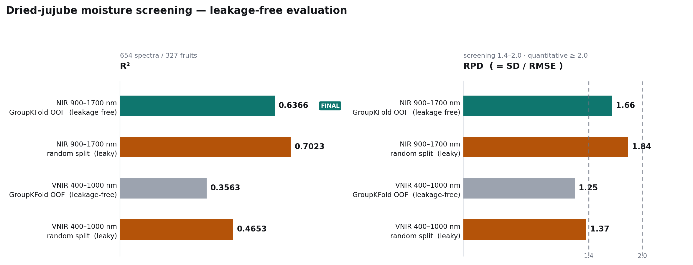

대추 함수율은 저장성과 유통 등급을 좌우함. 기존 측정은 오븐건조법 — 시료를 파괴해야 해서 전수 검사 불가능. 선별 라인에 붙일 수 있는 비파괴 방식이 필요했고, 선별 정확도 90% 이상을 요구하는 국가 R&D 과제의 내부 품질 파트로 수행함.
Specim FX10(400–1000nm, VNIR, 224밴드)과 KSP-3(900–1700nm, NIR, 640밴드) 카메라 2종으로 고정형 라인스캐닝 시스템 구축. 벨트 컨베이어, 할로겐 150W×2 양측 45° 조사, 스캔속도 5mm/s, 촬영거리 93.5cm.
핵심은 함수율 분포를 설계한 것. 예측 대상 값이 좁은 구간에 몰리면 회귀가 의미를 잃기 때문에, 등급별 시료를 냉장 보관하며 7회차에 걸쳐 촬영함. 개체 327개를 앞·뒤면 촬영해 스펙트럼 654건 확보, 실측 함수율 24.3–39.6%.
기준값은 오븐 105℃ 24시간 건조 → 데시케이터 30분 방랭 → 건·습 중량차로 산출.

SAM2 완전 자동 분할은 실패함 — 표면 주름과 색 변화를 여러 개체로 쪼개고, 접촉한 대추를 하나로 인식함. 포인트 프롬프트를 주는 반자동 방식으로 전환해 추출 정확도 95% 이상 확보.
마스크 영역에서 Reflectance = (Sample − Dark) / (White − Dark) 계산. 센서별로 큐브 축 구조가 다름 — KSP-3는 (lines, samples, bands), Specim FX10은 ENVI BIL (lines, bands, samples). 축을 정규화한 뒤 ROI 75% 침식 → 픽셀 평균.


좌: NIR (KSP-3, 900–1700nm) · 우: VNIR (Specim FX10, 400–1000nm)
원본 반사율은 산란·베이스라인 변동이 큼. SNV·MSC·Savitzky-Golay·1·2차 미분 조합을 비교해 SG(window 15) → MSC → 2차 미분 → 엣지 밴드 트림을 최종 채택. PLSR 잠재변수 수는 교차검증으로 결정.
엣지 트림은 밴드 수가 아니라 파장 기준으로 맞춰야 함. 밴드 30개는 NIR에서 37.6nm지만 VNIR에서는 80.7nm라, VNIR이 가진 유일한 수분 흡수대(970nm)가 잘려나감. 파장 정합으로 바꾸자 VNIR 성능이 +0.119 올라감.


수치를 확정하기 전에 파이프라인 전 단계를 되짚는 검증을 설계해 총 5건을 정정함. 정정은 모두 결과를 낮추는 방향이었지만, 검증된 값을 최종 수치로 확정함.
개체 단위 GroupKFold 5-fold, out-of-fold 예측 기준.

네 가지 분할 방식 전부에서 NIR이 앞섬. NIR가 보는 1,450nm는 물 O–H 신축진동의 1차 배음이고, VNIR가 볼 수 있는 970nm는 2차 배음이라 흡수가 훨씬 약함. 게다가 970nm는 실리콘 검출기의 감도가 급감하는 스펙트럼 끝자락에 위치함. 측정 결과가 분광학적 예측과 일치하며, 이는 후속 선별기의 센서 사양을 NIR로 결정하는 근거가 됨.
함수율이 28–34%에 71% 몰려 있어(IQR 3.65%p) R² 단독으로는 성능이 과소평가됨. 그래서 RPD를 병기했고, 현 성능은 정량 예측이 아닌 선별(screening) 수준임을 명시함.